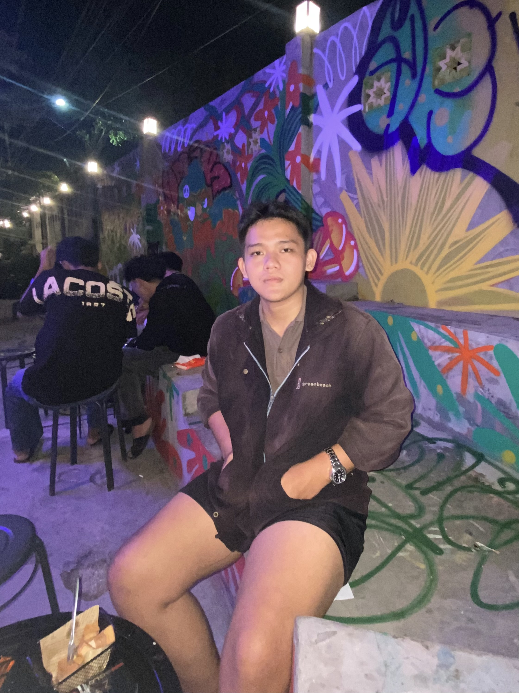

Kenalin, gue Abay. Sebelum ada dia, hidup gue mungkin kelihatan biasa aja, tapi jujur, di dalamnya ada ruang kosong yang gede banget. Gue udah terlalu lama berteman sama sepi, sampai gue mikir kalau sendirian itu emang takdir gue. Tapi ternyata semesta punya rencana lain yang nggak pernah gue duga sebelumnya.
Semuanya dimulai dari satu notifikasi di Telegram. Tanpa sengaja gue ketemu dia di sana—sebuah pertemuan virtual yang awalnya nggak pernah gue bayangin bakal jadi sejauh ini. Berawal dari obrolan random, pelan-pelan dia mulai ngisi hari-hari gue yang dulunya sunyi. Lewat ketikan chat dan suara di telepon, dia perlahan ngeruntuhin tembok sepi yang selama ini gue bangun.
Nggak butuh waktu lama buat gue sadar kalau gue udah jatuh hati. Dari yang tadinya nggak sengaja ketemu, sekarang dia jadi orang yang paling gue cari setiap hari. Dia bukan cuma sekadar 'orang yang gue kenal dari internet', tapi dia adalah alasan kenapa gue nggak merasa kesepian lagi. Sekarang, gue cuma pengen bilang kalau gue sayang banget sama dia.